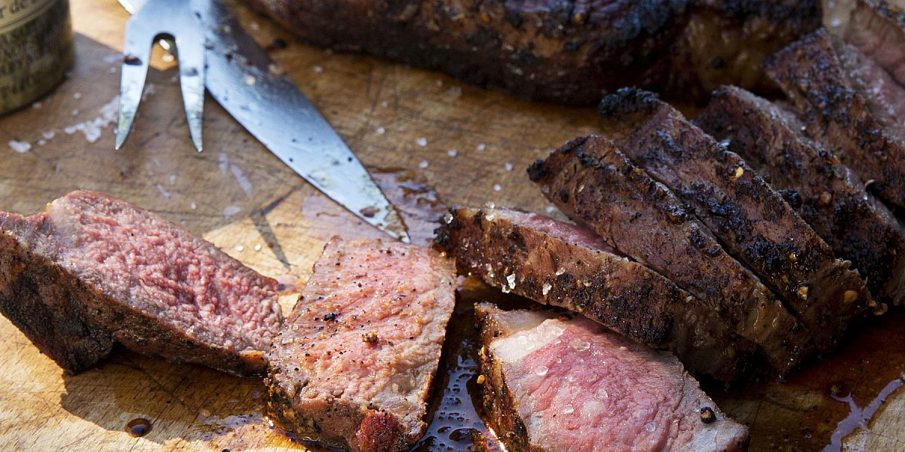

Grilled New York Strip Steaks

Description:
This method of cooking steaks on the grill is pure genius and I learned it from a master – Mark Lobel. Lobel’s of New York is a fifth generation butcher shop on Madison Avenue and it’s one of the top butchers in the country. I seasoned these steaks with a rub that Mark taught me but the real secret is in his grilling method. Perfect steak every time!
Ingredients
- Kosher salt and freshly ground black pepper
- 2 teaspoons light brown sugar
- 2 teaspoons ground coffee (regular or decaf)
- 1 teaspoon (dried) granulated garlic
- 1 teaspoon chipotle chile powder
- 1 teaspoon crushed red pepper flakes
- 3 (1½-inch-thick) New York strip steaks or “club steaks”
- 1½ tablespoons good olive oil
Directions
- In a small bowl, combine 2 tablespoons salt, 1 tablespoon black pepper, the brown sugar, coffee, garlic, chipotle powder, and red pepper flakes.
- Pat the steaks dry with paper towels, place them in a baking dish, and rub them all over with the olive oil.
- Sprinkle the steaks all over with the spice mix, using it all.
- Cover the dish and refrigerate for at least 2 hours to allow the flavors to get into the meat.
- When ready to cook, heat enough charcoal to cover half of the grill (I fill a charcoal chimney ¾ full).
- Pour a layer of hot coals on one side of the grill, leaving the other side empty.
- Cook the steaks on the hot side of the grill for exactly 2 minutes on one side, turn them over, and cook for exactly 2 minutes on the other side.
- Move the steaks to the cool side of the grill, put the lid on, check to be sure the vents are open, and cook for 8 to10 minutes, until a meat thermometer inserted sideways into the middle of the steak registers between 115 degrees for rare, and 120 degrees for medium-rare, and 125 degrees for medium.
- Transfer the steaks to a plate, cover the plate tightly with aluminum foil, and allow to rest for 15 minutes.
- Remove the foil after 15 minutes or the steaks will continue to cook!
- Slice the steaks, sprinkle with salt, and serve hot or warm.